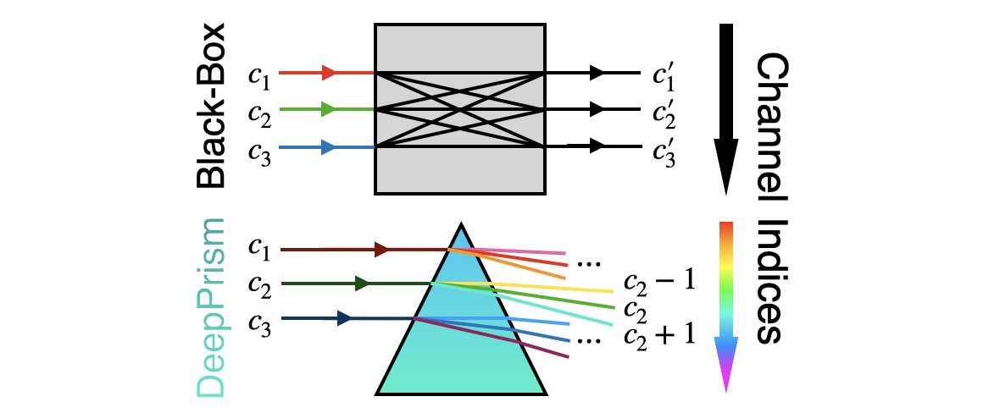
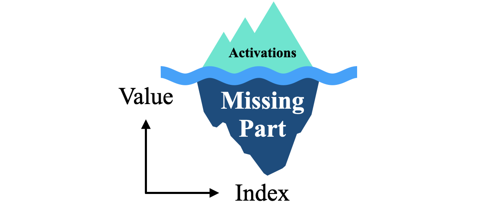
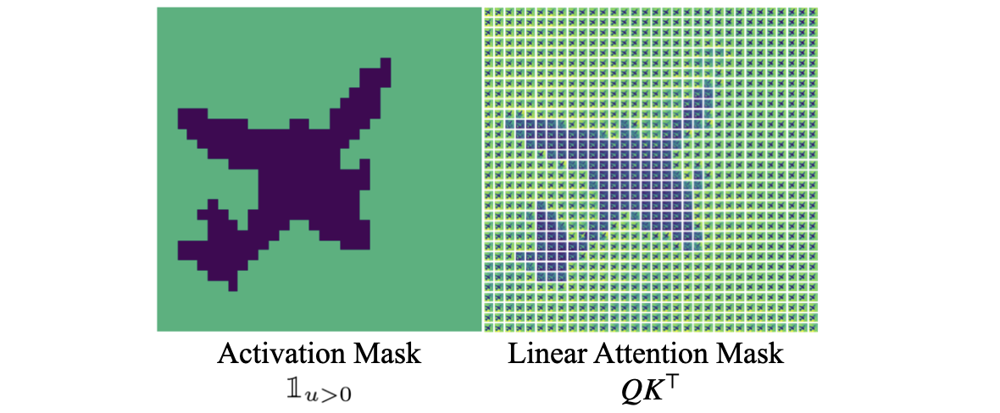
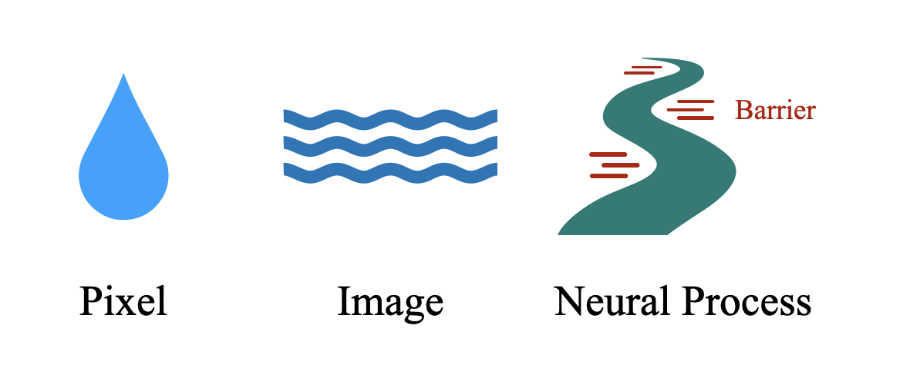
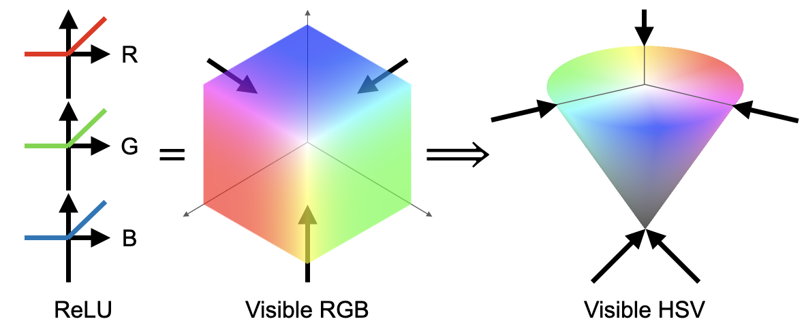
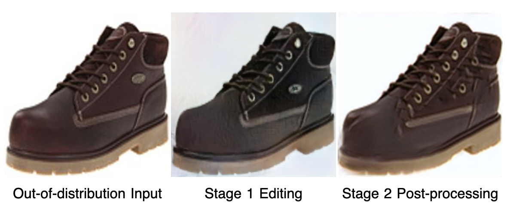

Changqing Fu
 |
Research Interests: I'm interested in visual generative models and a broad range of topics in deep learning. Currently I'm working on the improvement of diffusion models for better parameter/training/inference efficiency and with more effective control, using the approaches from geometric deep learning. I'm a senior-year PhD student in CEREMADE, University of Paris IX Dauphine - PSL, fortunately advised by Prof. Laurent D. Cohen. Before that I was a graduate teaching assistant in University at Albany - SUNY advised by Prof. Yiming Ying. I recieved a Master's degree in Applied and Theoretical Mathematics from Paris IX - PSL advised by Olga Mula and Robin Ryder, and a Bachelor's degree from School of Mathematical Sciences in Fudan University fortunately advised by Prof. Lei Shi. Here are my Institutional Page, CV, GitHub, Twitter and Linkedin. Email: cfu_at_ceremade_dot_dauphine_dot_fr, evergreencqfu_at_gmail_dot_com |
Projects
|
 |
DeepPrism. An unprecedented 1000x better parameter-efficient network design for generative models, by leveraging an equivariance on the channel dimension, where training and inference FLOPs are also greatly reduced. This design applies equally to attention layers and maintains generation performance for a variety of models such as VAE, StableDiffusion (LDM). |
|
 |
Tip of the Iceberg. An improvement on the widely-used perceptual loss, to achieve 10x more training efficieny for generative models, by calculating non-singular symmetric features instead of activations in the path-integral along layers. |
|
 |
Unifying Activation and Attention. A projective-geometric point of view to unify different operators in neural networks, under which the self-attention function intrinsically coincides with the activation-convolution layers by defining proper kernel functions. This connection does not change the form of commonly-used neural networks, can be visually confirmed, and leads to a unified view of the dynamics of neural processes. |
|
 |
Neural Barrier Process. A Riemannian-geometrical point of view on neural networks via a non-stationary central path flow of a conic program with hard barrier. The path regularization of the cone's perspective enables alignment of neural networks of different depth. |
|
 |
Conic Linear Unit. A non-pointwise activation function with unprecedented infinite-order symmetry group, which improves generation quality, and enables alignment of neural networks with different widths. Application involves more flexible Federated Learning using Optimal Transport. |
|
 |
Geometric Deformation on Objects. A robust unsupervised two-stage image manipulation model by modifying contour constraints. The use of contour constraints is inspired by the sparsity of the edited constraint, while the coarse-grained post-processing single-image GAN alleviates distortion caused by out-of-distribution inputs. |
Publications
Changqing Fu and Laurent D. Cohen. Geometric Deformation on Objects: Unsupervised Image Manipulation via Conjugation. In Scale Space and Variational Methods in Computer Vision (SSVM 2021), Lecture Notes in Computer Science (LNCS Volume 12679), Springer Nature. paper slides
Talks and Workshops
Symposium on AI in Biology and Health, Institut Pasteur, July 3-4, 2023, Paris, France
Ellis unConference, July 25 2023, Paris, France
Poster Presenter in MIAI/3IA Workshop, June 2023, Toulouse, France
General session “AI in Healthcare”, INFORMS Annual Meeting, Oct 25 2021, Virtual and CA, USA
Invited Speaker in Applied Mathematics Ph.D. Seminar, Sep 13 2021, Fudan University, Shanghai, China
Winter School for Young Researchers, CEREMADE, Feb 28 2022, Normandy, France
Young Researcher's Seminar, CEREMADE, Paris Dauphine University, Jan 20 2022, Paris, France
Oral Presenter in MIAI/3IA Workshop, Nov 2021, Toulouse, France
International Summer Program in Economics Education, Aug 2015, Hebrew University of Jerusalem
Business Summer School, Aug 2014, University of Cambridge